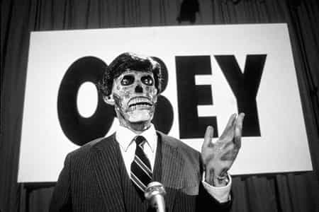

Henry Cavill, an up-and-coming actor, was the subject of a long, breezy feature on GQ Australia. Reading between the lines, I gather that attaining stardom had its ups and downs (as can be expected), but he’s handling it well. At the end, he addresses #MeToo Mania.
Cavill’s take

I’d buy this bloke a lager in a pub anywhere. Cheers, mate!
In brief, the worst he’d seen was some cast members “being perhaps overfamiliar”, and he told them to knock it off. His conscience is clean about his own conduct, though he notes that anyone’s actions can be misinterpreted. He disapproves of genuine bad behavior, though he fears that overreactions are harming courtship. Specifically:
“There’s something wonderful about a man chasing a woman. There’s a traditional approach to that, which is nice. I think a woman should be wooed and chased, but maybe I’m old-fashioned for thinking that.
“It’s very difficult to do that if there are certain rules in place. Because then it’s like: ‘Well, I don’t want to go up and talk to her, because I’m going to be called a rapist or something’. So you’re like, ‘Forget it, I’m going to call an ex-girlfriend instead, and then just go back to a relationship, which never really worked’. But it’s way safer than casting myself into the fires of hell, because I’m someone in the public eye, and if I go and flirt with someone, then who knows what’s going to happen?
“Now? Now you really can’t pursue someone further than, ‘No’. It’s like, ‘OK, cool’. But then there’s the, ‘Oh why’d you give up?’ And it’s like, ‘Well, because I didn’t want to go to jail?'”
The first item is that the climate of fear will worsen Approach Anxiety. I’ll further add that sketchy dudes who don’t care about their reputation or jobs (if they even have any) will ignore all the new unwritten rules and continue having a field day. MGTOW got a little stagnant a while back, but this feminist puritanism might well revive the Black Pilled part of the Manosphere.
The second item is that Bitch Shields as Shit Tests have become a red flag, even for token resistance when they expect the guy to keep plowing. So the ambiguous Chick Game shtick of “Are you man enough to storm my castle?” isn’t going to give girls the results they want. This might become an improvement; I have no tolerance for immature games like that, and I disqualify girls who behave that way.
Yahoo!’s reaction

It’s a better Yahoo! article than average, simply because it doesn’t discuss trannies.
It’s hard to find very much objectionable in the interview, even from a Blue Pill perspective. However, speaking of sound bite politics, Elizabeth Di Filippo of Yahoo! Style Canada dissected it quite thoroughly. Two days after publication, she fired back with “Henry Cavill missed the point of #MeToo — and he’s not the first one“.
Instead of making headlines for his new movie, Henry Cavill is receiving backlash for his off-the-mark comments about dating during the #MeToo movement.
…Cavill exhibits a growing trend for men in the post #MeToo era: A confusion for how to interact with women.
…Cavill comes across as seemingly afraid, or unable to make a misstep — and that fear extends into his romantic life.
Maybe he wants to keep his job?
At first, his comments read as seriously cringeworthy, and there’s no denying that they are. The #MeToo movement wasn’t a witch hunt to crucify all men, but an attempt for women to share their experiences of sexual assault to illustrate just how common women and men are victims of verbal, physical or sexual harassment.
There’s a major difference between this stated objective and what #MeToo actually became. Why is this hard to understand? The Spanish Inquisition probably had some lofty-sounding goals too.
She quotes some others who (in her opinion) also missed the point. One stated that #MeToo led to a “climate of mistrust between the sexes.” Another is from a psychotherapist who “believes there is an hesitancy for men to pursue women romantically out of fear of their actions being misinterpreted.”
According to him, guys see the dating game as having been hard enough already before #MeToo complicated things further: “one false, unconscious move and you have been categorized … there is no spectrum from being someone who just flirted badly or made a faux pas versus a serial rapist.” She also cites a dating coach who’s worked with guys fearful that even an innocent past conversation in college could ruin them in the present.
The confusion and subsequent fear is a new reaction by men to an age-old problem that has impacted women. The newfound paranoia that perhaps a man’s interactions with women haven’t been appropriate is a direct result of rape culture quieting and discrediting victims, and conditioning women to believe that it was our duty to police our actions, instead of holding men accountable for theirs.
Translation: the witch hunt is entirely our fault. Remember that feminists are selective puritans who also say “slut-shaming” is bad. Can you dig the logic?
The over-correction to avoid women altogether out of fear that their flirtations could be misinterpreted is an indication that perhaps men or “some men” are unable to decipher between flirtation and aggression, between a woman’s interest and a woman’s discomfort.
Really, who’s incorrectly deciphering? Let’s clarify this.
Everyone disapproves of genuine wrongdoing, except for outright criminals (who get rewarded with sex). However, most of what #MeToo actually has been describing is poorly-received flirting. Although bad game is a mistake, everyone (including women) is “guilty” of it occasionally. Still, #MeToo has effectively conflated that with real crimes, and encourages feminists to push the nuclear button. Also, when a guy is dogpiled on social media, investigated by HR, etc., he’s guilty until proven innocent. Careers have been destroyed in the wake of this inquisition, an exceedingly disproportionate penalty for botched flirtation.
Further, this emphasis moves the focus from objective wrongdoing to someone else’s subjective reaction. What may be well-received by some guys and in some circumstances may get a bad reaction in other cases. Men don’t want to cause offense, but we don’t read minds. Unfortunately, crossing the invisible line brings disaster. Finally, remarks without flirtatious intent can be misconstrued too. When drama queens and attention harlots got involved, #MeToo became quite a toxic brew.
She concludes:
Confusion is a good thing. For any man worried that their actions could potentially be held against them, maybe it’s time to be more conscious of what they say to a woman, what they text to a woman and what a woman says in return.
So feminism is still all about that “cold spike of fear” shtick. Awesome! Ironically, what Ms. Di Filippo wrote doesn’t reflect on the actor in question, but rather the mindset of feminists and journalist types today.
Et enfin
At least they’re in little “danger” of a guy asking them out on a date.
It concludes by stating that Cavill apologized for saying what he did. It’s rather unfathomable why expressing honest opinions needs an apology, but hey, it’s the Current Year.
Read More: The Mainstream Embrace Of #MeToo Puts Us One Step Closer Towards The Enslavement Of Men